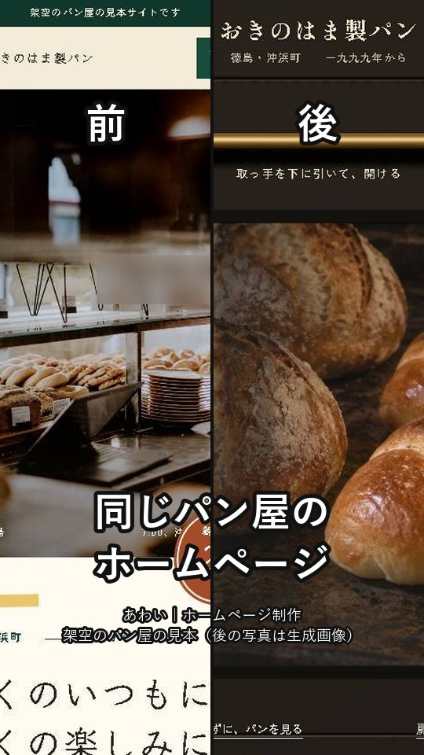
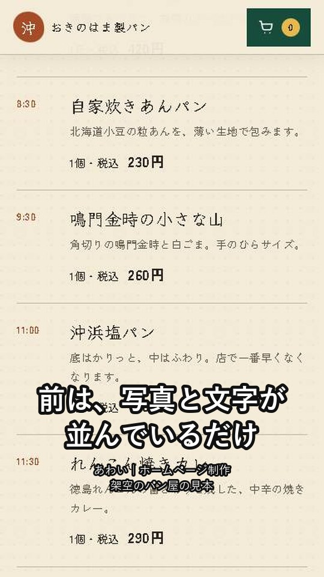
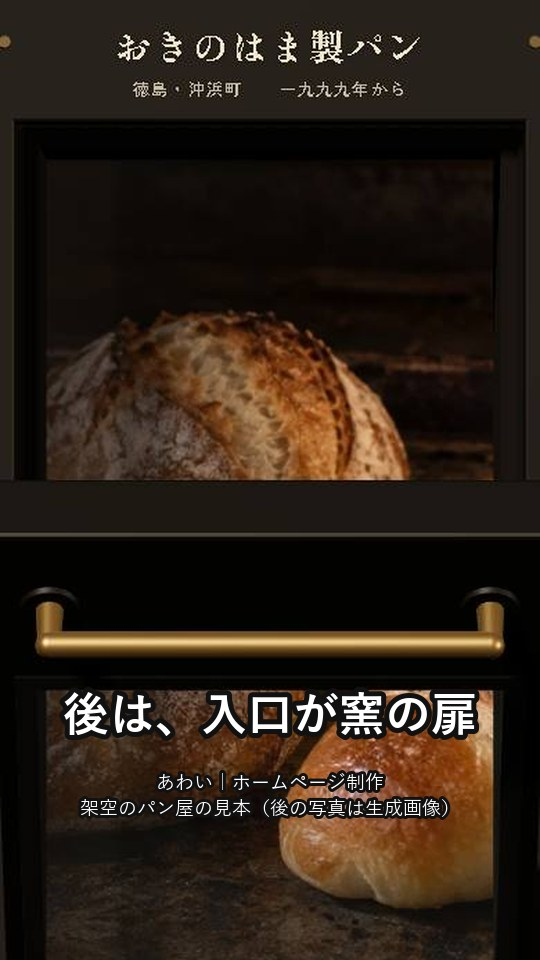
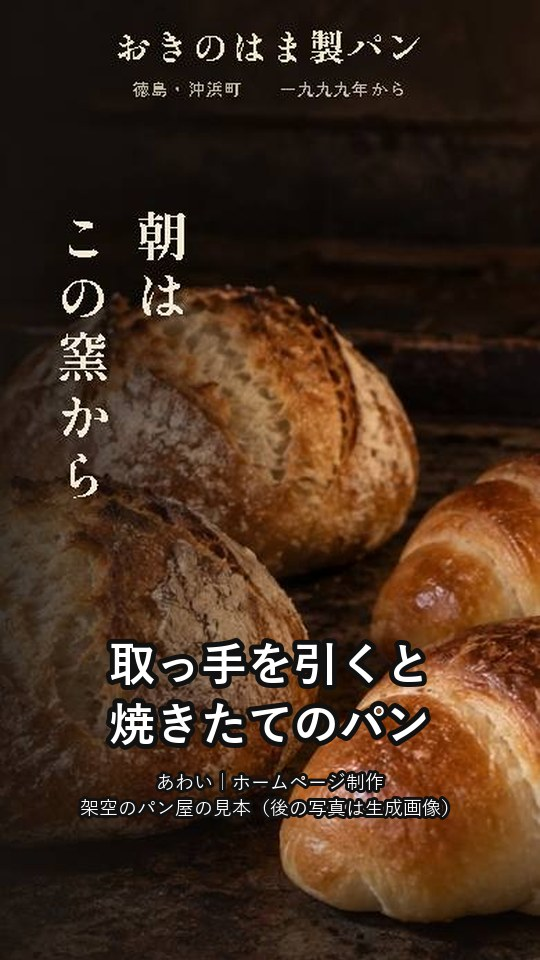
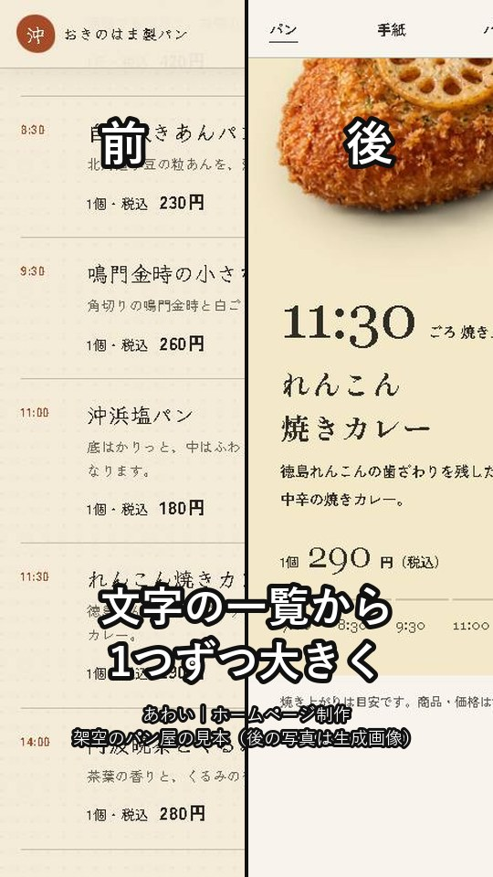
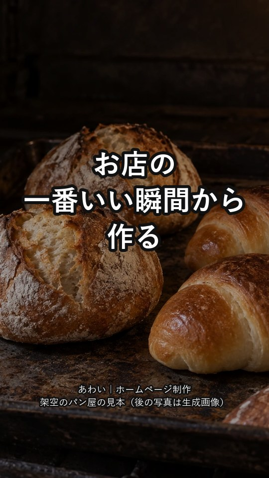
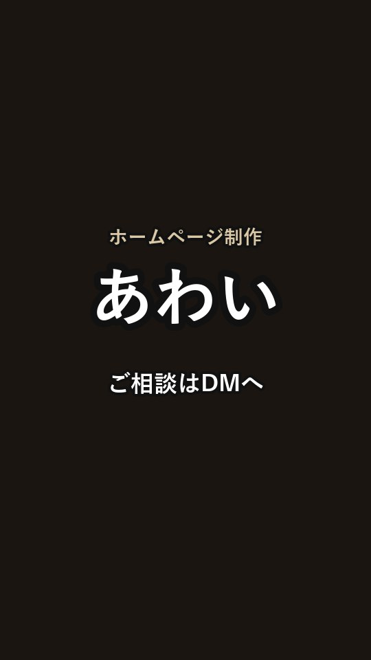

1 0秒〜
同じパン屋の、ホームページです。
前と後を左右に並べて始めます。
あわいの宣伝動画の絵コンテです（約33秒・合成音声・BGMなし）。画面は実際のサイトから撮りました。字の位置と動きは本制作で整えます。

1 0秒〜
同じパン屋の、ホームページです。
前と後を左右に並べて始めます。

2
前の作りは、写真と文字が並んでいるだけでした。
前のサイトを下へ送ります。


3
作り直したあとは、入口が窯の扉です。取っ手を引くと、焼きたてのパンが見えます。
扉を実際に引いて開ける映像です。

4
パンの紹介も、文字の一覧をやめました。焼き上がる時刻ごとに、1つずつ大きく見せます。
右のパンが次々に替わります。

5
パン屋の一番いい瞬間は、焼きたてです。そこから作ると、ほかのお店と同じ形になりません。

6
あなたのお店の一番いい瞬間から、見せ方を考えて作ります。ホームページ制作、あわい。ご相談はDMへ。